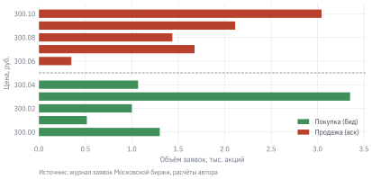
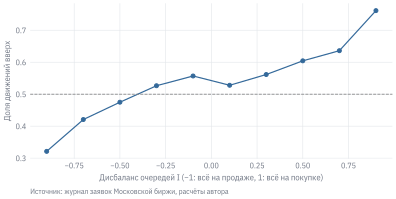
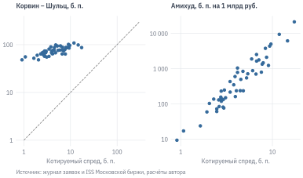
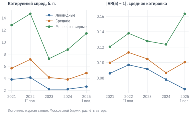

В предыдущих главах цена акции была одним числом в день – ценой закрытия. На самом деле в каждый момент торгов у акции две цены: по одной её можно купить, по другой продать. Между ними лежит спред, за ними стоят очереди заявок, и сделка крупнее этих очередей сдвигает цену. Всё это называют микроструктурой рынка: как устроен механизм торгов и как он превращает заявки участников в цены.
Микроструктура важна и тем, кто не торгует внутри дня. Издержки, которые съели часть доходности моментума в главе 16 и стратегии на скользящей средней в главе 15, определяются именно здесь. Ликвидность бумаги решает, можно ли включить её в портфель. А вопрос об эффективности рынка из главы 7 на горизонте секунд и минут получает неожиданный ответ: цены предсказуемы, но заработать на этом нельзя.
Глава опирается на полный журнал заявок Московской биржи – запись о каждой заявке и каждой сделке. Мы разберём один торговый день Сбербанка в стакане, научимся измерять ликвидность по дневным данным и проверим, насколько эти оценки точны. В конце посмотрим, как изменился российский рынок после 2022 г., когда из него ушли иностранные инвесторы, а доля частных выросла до четырёх пятых оборота.
УведомлениеВ этой главе
Разбираем, из чего состоит ликвидность: спред, глубина, ценовое воздействие.
Смотрим, как устроены стакан и журнал заявок Московской биржи и в чём ловушки этих данных.
Анализируем один день в стакане Сбербанка: спред, дисбаланс очередей, поток сделок, ценовое воздействие.
Считаем меры ликвидности по дневным данным – Амихуда, Ролла, Корвина – Шульца, Абди – Ранальдо – и сверяем их с настоящим спредом.
Проверяем эффективность цен на горизонте секунд тестом дисперсионного отношения.
Сравниваем рынок до и после 2022 г. и проверяем, можно ли заработать на предсказуемости потока заявок.
Данные:stocks.parquet; папка micro/ – один день стакана и сделок SBER и панель 60 акций за 2021–2025 гг. (см. данные книги). Нужно знать: доходность и волатильность (глава 4); автокорреляция и случайное блуждание (глава 7); издержки бэктеста (глава 15).
17.1 Что такое ликвидность
Актив ликвиден, если его можно быстро купить или продать в нужном объёме, не сдвинув цену. В этом определении три измерения, и у каждого своя мера.
Спред – разница между лучшей ценой продажи (ask, аск) и лучшей ценой покупки (bid, бид). Кто хочет совершить сделку немедленно, покупает по аску и продаёт по биду и теряет на круге весь спред. Обычно его выражают в базисных пунктах (б. п., сотые доли процента) от средней котировки.
Глубина – сколько бумаг стоит в заявках на лучших ценах и рядом с ними. Небольшую сделку исполнит первый уровень, крупная «пройдёт» несколько уровней и заплатит больше спреда.
Ценовое воздействие (price impact) – насколько цена сдвигается после сделки и не возвращается обратно. Это главная статья издержек крупного инвестора.
Почему спред вообще существует? Первое объяснение – плата за услугу. Тот, кто выставляет заявки (поставщик ликвидности, маркетмейкер), несёт издержки и риск держать позицию, и спред их окупает. Второе объяснение тоньше. Среди тех, кто совершает сделки по рыночным ценам, есть информированные участники, которые знают о бумаге больше. Сделка с ними в среднем убыточна: если они покупают, цена потом растёт. Поставщик ликвидности не знает, кто перед ним, и закладывает ожидаемый убыток от информированных в спред, который платят все. Это модель Glosten и Milgrom (1985 г.). Из неё следует, что спред шире у бумаг с большей информационной асимметрией и что каждая сделка несёт информацию: после покупки котировки сдвигаются вверх.
Kyle (1985 г.) описал ту же логику через ценовое воздействие. Маркетмейкер видит только суммарный поток заявок и сдвигает цену пропорционально его дисбалансу:
\[
\Delta p = \lambda \cdot (\text{покупки} - \text{продажи}).
\tag{17.1}\]
Коэффициент \(\lambda\) («лямбда Кайла») – мера неликвидности: чем он больше, тем дороже обходится каждый рубль несбалансированного спроса. Случайные заявки неинформированных участников маскируют информированных и позволяют информации входить в цену постепенно.
Третья модель – Roll (1984 г.) – нужна нам как инструмент измерения. Пусть эффективная цена \(p^*_t\) следует случайному блужданию, а сделки идут то по биду, то по аску: \(p_t = p^*_t + \frac{s}{2} d_t\), где \(d_t = +1\) для покупки и \(-1\) для продажи, знаки независимы. Тогда соседние изменения цены сделок отрицательно коррелированы – цена «отскакивает» между бидом и аском, и спред можно восстановить по одной ковариации:
Roll, Richard. 1984 г. «A Simple Implicit Measure of the Effective Bid-Ask Spread in an Efficient Market». The Journal of Finance 39 (4): 1127–39.
\[
\hat s = 2\sqrt{-\operatorname{Cov}(\Delta p_t, \Delta p_{t-1})}.
\tag{17.2}\]
В главе 7 (раздел 7.4) мы уже применяли эту формулу к дневным доходностям неликвидной акции. Этот бид-аск отскок (bid-ask bounce) – первое, что нужно помнить при работе с высокочастотными ценами сделок: отрицательная автокорреляция их приращений – механический эффект, а не предсказуемость, на которой можно заработать.
17.2 Стакан и журнал заявок
Московская биржа торгует акциями через книгу лимитных заявок, или стакан. Лимитная заявка – поручение купить или продать не дороже (не дешевле) указанной цены. Если встречной заявки по такой цене нет, заявка встаёт в очередь и ждёт. Лучшая из ждущих заявок на покупку образует бид, на продажу – аск. Рыночная заявка исполняется сразу против стоящих в стакане: её автор берёт ликвидность (он агрессор), автор стоящей заявки её предоставляет. Внутри одной цены заявки исполняются в порядке поступления.
Данные о торгах бывают трёх уровней подробности:
уровень 1 (L1) – лучшие бид и аск с объёмами и лента сделок;
уровень 2 (L2) – несколько лучших уровней стакана с суммарным объёмом на каждом;
уровень 3 (L3) – журнал отдельных заявок: каждая постановка, снятие и исполнение с номером заявки и временем до микросекунды.
Журнал заявок Московской биржи (OrderLog) – данные уровня 3. За один торговый день по рынку акций в нём несколько десятков миллионов записей, за 2021–2025 гг. – около терабайта. Каждая запись содержит номер, тикер, сторону, время, номер заявки, действие (1 – постановка, 0 – снятие, 2 – сделка), цену и объём в лотах. Чтобы получить стакан на любой момент, записи применяют к книге по порядку: постановка добавляет объём на уровень цены, снятие и сделка убирают.
ПредупреждениеЛовушки журнала заявок
Восстановить стакан просто только на бумаге. На практике в журнале есть особенности, каждая из которых без ошибки в коде тихо искажает результат.
Одна сделка – две записи: со стороны покупателя и продавца, с одним номером сделки. Наивный подсчёт удваивает оборот. При этом записи разных бумаг перемешаны, и сравнивать номер сделки с предыдущей строкой файла нельзя – только внутри бумаги.
Сторона первой записи сделки ничего не говорит о направлении. Агрессора определяют по номеру заявки: пассивная заявка стояла в книге раньше, и её номер меньше. Без этого правила поток покупок и продаж получает случайный знак.
Рыночная заявка приходит с нулевой ценой и в стакан не встаёт.
Айсберг-заявки показывают в стакане только часть объёма. По SBER за 30.12.2025 их было 644 из 1,08 млн заявок, и они дали 3,1% дневного объёма. Видимая глубина стакана занижает доступную ликвидность.
Формат времени менялся. До марта 2016 г. время записано с точностью до миллисекунд, позже – до микросекунд, и по числу цифр форматы не различить.
Файл шире основной сессии: с декабря 2021 г. в нём утренняя и вечерняя сессии, с 2025 г. – сессии выходного дня с ликвидностью на порядок ниже. Сравнивая периоды, нужно брать одинаковое окно торгов.
Восстановленный стакан нужно сверять с внешним источником: число сделок и оборот за день – с официальными итогами биржи (MOEX ISS). Совпадение кода с самим собой ничего не доказывает.
Сам журнал распространять нельзя: доступ к нему определяется условиями биржи. Для этой главы автор подготовил два производных набора данных. Первый – один торговый день Сбербанка, 30 декабря 2025 г., основная сессия 10:00–18:40: пять лучших уровней стакана на каждую секунду и все сделки со знаком агрессора. Второй – панель из статьи автора о рынке после 2022 г. [Салихов (2026 г.); передана в журнал «Деньги и кредит»]: показатели ликвидности и эффективности для 60 акций по 5 732 тикер-дням 2021–2025 гг.
За основную сессию 30 декабря 2025 г. прошло 88 693 сделки на 4,57 млрд руб. Это предпраздничный и спокойный день: средняя котировка ходила в пределах от 299,12 до 300,55 руб., а стандартное отклонение её изменения за минуту – всего 2,7 б. п. Минимальный шаг цены (тик) у SBER – 1 копейка, или 0,33 б. п. В 79% секунд спред равен одному тику: дешевле торговать на бирже невозможно, и средний спред – 0,47 б. п. Для сравнения: в 2021 г. средний котируемый спред по 60 активно торгуемым акциям составлял 7,3 б. п., а у трети наименее ликвидных из них – 12,8 б. п. (раздел 17.6).
Глубина невелика по сравнению с оборотом. На лучших ценах стоит в медиане 0,54 млн руб. с каждой стороны, на пяти лучших уровнях – 3,6 млн. Типичная сделка мелкая: медиана – 5,1 тыс. руб., среднее – 52 тыс. руб. Распределение размеров сделок сильно скошено: немногие крупные сделки дают большую часть оборота. Покупатели были агрессорами в 58% сделок, но по объёму покупки и продажи почти уравновешены (51% на покупки): продавцы совершали меньше сделок, но крупнее.
Код
t0 = pd.Timestamp("2025-12-30 12:00:00")row = book.loc[t0]fig, ax = plt.subplots(figsize=(6.5, 2.8))for side, color in [("bid", "C2"), ("ask", "C3")]: px = [row[f"{side}_px{j}"] for j inrange(1, 6)] q = [row[f"{side}_qty{j}"] /1000for j inrange(1, 6)] ax.barh(px, q, height=0.007, color=color, label="Покупка (бид)"if side =="bid"else"Продажа (аск)")ax.axhline((row["bid_px1"] + row["ask_px1"]) /2, color="grey", lw=0.8, ls="--")ax.set_xlabel("Объём заявок, тыс. акций")ax.set_ylabel("Цена, руб.")ax.legend(loc="lower right")plot.source(ax, "журнал заявок Московской биржи, расчёты автора", offset=30)plt.show()

Рисунок 17.1: Стакан SBER в 12:00:00 30.12.2025: пять лучших уровней цены покупки (бид) и продажи (аск), объём в тыс. акций
На рисунке 17.1 стакан в полдень. Уровни цен не обязательно идут подряд: между ними бывают пустые тики. Пунктир – средняя котировка, полусумма лучших цен. Объём на лучших уровнях неодинаков, и это неравенство, как мы сейчас увидим, несёт информацию о следующем движении цены.
Рисунок 17.2: SBER 30.12.2025: средняя котировка (поминутно) и число сделок за 15 минут
Активность в течение дня неравномерна (рисунок 17.2). Сделок больше всего в первые полчаса и в моменты, когда цена движется: торговля и волатильность идут рука об руку. Средняя котировка при этом меняется редко: в 81% секунд она такая же, как секундой раньше. Цена на бирже дискретна – она стоит на месте, пока одна из очередей на лучших уровнях не исчерпается.
17.3.2 Микроцена и дисбаланс очередей
Пусть на биде стоит 10 тыс. акций, а на аске – 500. Аск вот-вот «съедят», и следующее изменение средней котировки, скорее всего, будет вверх. Эту идею выражает микроцена – среднее лучших котировок, взвешенное объёмами противоположных сторон:
где \(P^b, P^a\) – лучшие цены, \(Q^b, Q^a\) – объёмы на них, \(m_t\) – средняя котировка, \(s_t\) – спред, а \(I_t\) – дисбаланс очередей от −1 до 1. Тождество справа показывает, что микроцена – это средняя котировка плюс поправка, пропорциональная спреду. Оно пригодится нам в разделе 17.6. Отметим, что у Stoikov (2018 г.) термин micro-price обозначает другую, более сложную оценку – ожидание будущей средней котировки; формула 17.3 – её простейшее приближение.
Код
move = np.sign(mid.diff()).replace(0, np.nan)next_move = move.shift(-1).bfill() # направление следующего измененияbins = pd.cut(imb, np.linspace(-1, 1, 11), include_lowest=True)p_up = (next_move.dropna() >0).groupby(bins, observed=True).mean()centers = [b.mid for b in p_up.index]fig, ax = plt.subplots(figsize=(6.5, 2.8))ax.plot(centers, p_up.values, marker="o")ax.axhline(0.5, color="grey", lw=0.8, ls="--")ax.set_xlabel("Дисбаланс очередей I (−1: всё на продаже, 1: всё на покупке)")ax.set_ylabel("Доля движений вверх")plot.source(ax, "журнал заявок Московской биржи, расчёты автора", offset=30)plt.show()

Рисунок 17.3: Доля случаев, когда следующее изменение средней котировки SBER направлено вверх, в зависимости от дисбаланса очередей на лучших уровнях; 30.12.2025, сетка 1 с
Связь на рисунке 17.3 в целом монотонная и сильнее всего на краях. Когда почти весь объём на лучших уровнях стоит на продаже, следующее изменение средней котировки направлено вверх лишь в 32% случаев; когда на покупке – в 76%. Для статистики это сильная предсказуемость. Но торговать на ней почти невозможно: движение – один тик, 0,33 б. п., а чтобы на нём заработать, нужно купить по аску и продать по биду, заплатив весь спред, плюс комиссию брокера. К этому мы вернёмся в разделе 17.7.
17.3.3 Сделки: знак, спред и ценовое воздействие
Знак агрессора позволяет увидеть то, чего не видно в ценах. Первое наблюдение: знаки сделок сильно автокоррелированы.
Код
sign = trades["side"].astype(float)lags = np.unique(np.logspace(0, np.log10(500), 30).astype(int))acf = [sign.autocorr(k) for k in lags]fig, ax = plt.subplots(figsize=(6.5, 2.6))ax.plot(lags, acf, marker="o")ax.set_xscale("log")ax.minorticks_off()ax.set_xticks([1, 3, 10, 30, 100, 300], labels=["1", "3", "10", "30", "100", "300"])ax.set_xlabel("Лаг, сделок")ax.set_ylabel("Автокорреляция")plot.source(ax, "журнал заявок Московской биржи, расчёты автора", offset=30)plt.show()
Автокорреляция на первом лаге – 0,59, на сотом – всё ещё 0,14, на пятисотом – 0,05 (рисунок 17.4). За покупкой обычно следует покупка, и так на протяжении сотен сделок. Это длинная память потока заявок(Lillo и Farmer 2004 г.): крупные участники дробят большие поручения на множество мелких сделок, чтобы не сдвинуть цену. Отсюда и мелкий средний размер сделок. Предпосылка модели Ролла о независимых знаках здесь нарушена.
Lillo, Fabrizio, и J. Doyne Farmer. 2004 г. «The Long Memory of the Efficient Market». Studies in Nonlinear Dynamics & Econometrics 8 (3).
Сопоставив цену сделки с котировками, можно разложить издержки исполнения. Эффективный спред – удвоенное отклонение цены сделки от средней котировки в момент сделки, со знаком агрессора: \(2d_k(p_k - m_k)\). Он больше котируемого, если сделка прошла несколько уровней стакана. Эффективный спред делится на две части. Ценовое воздействие – насколько средняя котировка сдвинулась в сторону сделки через минуту: \(2d_k(m_{k+1\text{мин}} - m_k)\). Это то, что поставщик ликвидности теряет из-за информированности контрагента (в духе Glosten и Milgrom (1985 г.)). Остаток – реализованный спред, \(2d_k(p_k - m_{k+1\text{мин}})\), – его заработок.
Код
quotes = pd.DataFrame({"time": mid.index, "mid": mid.values})tq = pd.merge_asof(trades, quotes, on="time") # котировка на начало секунды сделкиlater = quotes.assign(time=quotes["time"] - pd.Timedelta("1min")).rename(columns={"mid": "mid_1m"})tq = pd.merge_asof(tq, later, on="time", direction="forward")tq = pd.merge_asof(tq, pd.DataFrame({"time": spread_bp.index, "qspread": spread_bp.values}), on="time")tq = tq.dropna(subset=["mid", "mid_1m"]) # первая секунда и последняя минутаd = tq["side"]eff =2* d * (tq["price"] - tq["mid"]) / tq["mid"] *1e4impact =2* d * (tq["mid_1m"] - tq["mid"]) / tq["mid"] *1e4dp = trades["price"].diff().dropna()cov = np.cov(dp.iloc[1:], dp.iloc[:-1])[0, 1]costs = pd.Series({"Котируемый спред (среднее по секундам)": spread_bp.mean(),"Котируемый спред в моменты сделок": tq["qspread"].mean(),"Эффективный спред": eff.mean()," в т. ч. ценовое воздействие": impact.mean()," в т. ч. реализованный спред": (eff - impact).mean(),"Эффективный спред, взвешенный объёмом": np.average(eff, weights=tq["qty"]),"Оценка Ролла по ценам сделок": 2* np.sqrt(-cov) / trades["price"].mean() *1e4,}, name="б. п.")costs.to_frame().style.format(ru(2))
Таблица 17.1: Издержки исполнения SBER 30.12.2025, б. п. от средней котировки. Среднее по сделкам; ценовое воздействие и реализованный спред – через 1 минуту после сделки
б. п.
Котируемый спред (среднее по секундам)
0,47
Котируемый спред в моменты сделок
0,55
Эффективный спред
1,22
в т. ч. ценовое воздействие
0,95
в т. ч. реализованный спред
0,26
Эффективный спред, взвешенный объёмом
2,06
Оценка Ролла по ценам сделок
0,38
Средний эффективный спред – 1,22 б. п., заметно больше котируемого (таблица 17.1). Часть разницы – реальная: в моменты сделок котируемый спред в среднем шире (0,55 б. п.), а крупные сделки проходят несколько уровней стакана (взвешенный объёмом эффективный спред – 2,06 б. п.). Часть – погрешность измерения: котировка взята на начало секунды, а за секунду она могла сдвинуться. Большая часть эффективного спреда – ценовое воздействие (0,95 б. п.): через минуту котировка в среднем уходит в сторону сделки, и поставщику ликвидности остаётся 0,26 б. п. Отчасти это информация, отчасти – длинная память потока: за покупкой следуют новые покупки и двигают цену дальше.
Оценка Ролла по ценам сделок (0,38 б. п.) близка к котируемому спреду, несмотря на нарушенную предпосылку о независимых знаках. При спреде в один тик цены сделок прыгают между двумя уровнями, и отскок хорошо виден в ковариации.
Наконец, оценим лямбду Кайла 17.1 – регрессию изменения средней котировки за интервал на чистый поток сделок за тот же интервал. Для сравнения возьмём второй показатель давления – дисбаланс потока заявок (order flow imbalance, OFI) по Cont и др. (2014 г.). Он считается по изменениям лучших уровней стакана между соседними снимками:
а OFI за интервал – сумма \(e_t\). Рост бида или его объёма и отход аска дают положительный вклад, то есть давление вверх. В отличие от потока сделок, OFI учитывает и постановку, и снятие заявок.
Код
e = ((bid >= bid.shift()) * qb - (bid <= bid.shift()) * qb.shift()- (ask <= ask.shift()) * qa + (ask >= ask.shift()) * qa.shift()).fillna(0)flow = (trades["qty"] * trades["side"] * trades["price"]).set_axis(trades["time"]) /1e6# млн руб.def r2(x, y): ok = x.notna() & y.notna()return np.corrcoef(x[ok], y[ok])[0, 1] **2*100rows, lam = {}, {}for h, name in [("10s", "10 секунд"), ("1min", "1 минута"), ("5min", "5 минут")]: edges = pd.date_range("2025-12-30 10:00", "2025-12-30 18:40", freq=h) p = mid.reindex(edges) # без подстановки будущей котировки dm = np.log(p.shift(-1) / p) *1e4# изменение от T до T+h fl = flow.resample(h, closed="left", label="left").sum().reindex(edges)# e(t) описывает изменение (t-1, t]; OFI суммируем по (T, T+h]. of = e.resample(h, closed="right", label="right").sum().reindex(edges).shift(-1) rows[name] = {"Поток сделок: тот же интервал": r2(fl, dm),"Поток сделок: прогноз": r2(fl, dm.shift(-1)),"OFI: тот же интервал": r2(of, dm),"OFI: прогноз": r2(of, dm.shift(-1))} ok = dm.notna() lam[name] = np.polyfit(fl[ok], dm[ok], 1)[0] # б. п. на 1 млн руб.pd.DataFrame(rows).style.format(ru(1))
Таблица 17.2: Доля дисперсии изменения средней котировки SBER, объяснённая потоком за тот же интервал и за предыдущий интервал (R², %); 30.12.2025
10 секунд
1 минута
5 минут
Поток сделок: тот же интервал
31,5
34,6
33,8
Поток сделок: прогноз
1,6
0,9
1,7
OFI: тот же интервал
4,5
5,3
4,6
OFI: прогноз
0,0
0,0
0,5
Поток сделок за минуту объясняет 35% дисперсии изменения котировки за ту же минуту (таблица 17.2). Лямбда Кайла – около 2,0 б. п. на 10 млн руб. чистых покупок. Но поток прошлой минуты объясняет лишь 0,9% изменения следующей. Здесь «прогноз» означает связь с последующим интервалом внутри той же выборки, а не качество прогноза вне выборки. Одновременная связь сильна, связь с будущим интервалом – слаба: давление сразу отражается в цене, и к тому моменту, когда его видно, большая часть движения уже произошла. OFI по секундным снимкам объясняет меньше, чем поток сделок (5%): между снимками происходят сотни событий, и по двум соседним снимкам их суммарный вклад точно не восстановить. Cont и др. (2014 г.), считавшие OFI по каждому событию, получали одновременный R² около 65%.
17.4 Ликвидность по дневным данным
Журнал заявок есть у немногих, и его история коротка. Для исследований за десятилетия и по тысячам бумаг используют меры, которые считаются по дневным ценам и оборотам. Разберём пять самых распространённых.
Неликвидность Амихуда(Amihud 2002 г.) – среднее отношение модуля дневной доходности к обороту: \[
\text{ILLIQ} = \frac{1}{D}\sum_{d=1}^{D} \frac{|r_d|}{V_d}.
\tag{17.5}\] Это грубый аналог лямбды Кайла: на сколько сдвигается цена на рубль оборота. Мы выражаем его в базисных пунктах на 1 млрд руб.
Оценка Ролла17.2 по дневным ценам закрытия за месяц. Если ковариация положительна, оценка не определена.
Оценка Корвина – Шульца(Corwin и Schultz 2012 г.) использует дневные максимум \(H\) и минимум \(L\). Максимум дня обычно – покупка по аску, минимум – продажа по биду, поэтому размах \(\ln(H/L)\) содержит и волатильность, и спред. Волатильность растёт с длиной интервала, а спред – нет. Сравнив размах за два отдельных дня с размахом за два дня вместе, можно их разделить: \[
\alpha = \frac{\sqrt{2\beta} - \sqrt{\beta}}{3 - 2\sqrt 2} - \sqrt{\frac{\gamma}{3 - 2\sqrt 2}}, \qquad
S = \frac{2(e^{\alpha} - 1)}{1 + e^{\alpha}},
\tag{17.6}\] где \(\beta = \ln^2(H_t/L_t) + \ln^2(H_{t+1}/L_{t+1})\), \(\gamma = \ln^2\big(\max(H_t, H_{t+1})/\min(L_t, L_{t+1})\big)\). Отрицательные дневные оценки обычно заменяют нулём.
Оценка Абди – Ранальдо(Abdi и Ranaldo 2017 г.) добавляет цену закрытия \(c_t\): \(\hat s^2 = 4\,\mathbb{E}\big[(c_t - \eta_t)(c_t - \eta_{t+1})\big]\), где \(\eta_t = (\ln H_t + \ln L_t)/2\) – середина дневного диапазона, а \(c_t\) – логарифм цены закрытия.
Доля дней с нулевой доходностью(Lesmond и др. 1999 г.). Если издержки высоки, информированным участникам невыгодно торговать на мелких новостях, и цена стоит на месте.
Lesmond, David A., Joseph P. Ogden, и Charles A. Trzcinka. 1999 г. «A New Estimate of Transaction Costs». The Review of Financial Studies 12 (5): 1113–41.
s = (data.load_stocks(columns=["open", "high", "low", "close", "value_rub"]) .query("value_rub > 0 and high > 0 and low > 0") .sort_values(["ticker", "date"]))s["date"] = s["date"].astype("datetime64[ns]")g = s.groupby("ticker")s["r"] = np.log(s["close"] / g["close"].shift())s["amihud"] = s["r"].abs() / (s["value_rub"] /1e9) *1e4# б. п. на 1 млрд руб.s["zero"] = (s["r"] ==0).astype(float)# Корвин – Шульц по паре дней (t−1, t)hl = np.log(s["high"] / s["low"]) **2beta = hl + g["high"].shift().pipe(np.log).sub(g["low"].shift().pipe(np.log)) **2h2 = np.maximum(s["high"], g["high"].shift())l2 = np.minimum(s["low"], g["low"].shift())gamma = np.log(h2 / l2) **2k =3-2* np.sqrt(2)alpha = (np.sqrt(2* beta) - np.sqrt(beta)) / k - np.sqrt(gamma / k)s["cs"] = (2* (np.exp(alpha) -1) / (1+ np.exp(alpha))).clip(lower=0) *1e4# Абди – Ранальдоeta = (np.log(s["high"]) + np.log(s["low"])) /2s["ar"] =4* (np.log(s["close"]) - eta) * (np.log(s["close"]) - eta.groupby(s["ticker"]).shift(-1))def roll(r): c = r.cov(r.shift()) # ковариация соседних измененийreturn2* np.sqrt(-c) *1e4if c <0else np.nans["month"] = s["date"].dt.to_period("M")gm = s.groupby(["ticker", "month"])monthly = pd.DataFrame({"amihud": gm["amihud"].mean(), "zero": gm["zero"].mean(), "cs": gm["cs"].mean(),"ar": np.sqrt(gm["ar"].mean().clip(lower=0)) *1e4,"roll": gm["r"].apply(lambda r: roll(r) if r.count() >10else np.nan),}).reset_index()monthly.tail(3)#> ticker month amihud zero cs ar roll#> 15030 YDEX 2026-07 62.047586 0.0 105.798614 0.000000 NaN#> 15031 YDEX 2026-08 74.938822 0.0 99.832905 131.884837 246.685299#> 15032 YDEX 2026-09 57.276290 0.0 52.474988 79.320117 NaN
Код
library(dplyr)qf_load_stocks()|>filter(value_rub>0)|>arrange(ticker, date)|>group_by(ticker)|>mutate(r =log(close/lag(close)), amihud =abs(r)/(value_rub/1e9)*1e4)|># б. п. на 1 млрд руб.group_by(ticker, month =format(date, "%Y-%m"))|>summarise(amihud =mean(amihud, na.rm =TRUE), zero =mean(r==0, na.rm =TRUE), .groups ="drop")|>filter(month==max(month))|>arrange(amihud)|>head()#> # A tibble: 6 x 4#> ticker month amihud zero#> <chr> <chr> <dbl> <dbl>#> 1 SBER 2026-09 14.2 0#> 2 GAZP 2026-09 20.7 0#> 3 LKOH 2026-09 21.5 0#> 4 ROSN 2026-09 23.4 0#> 5 T 2026-09 26.3 0#> 6 OZON 2026-09 37.4 0
Для оценки Ролла мы используем доходности, а не изменения цен: это та же ковариация, только в относительных единицах. В R показан расчёт меры Амихуда и доли нулевых доходностей; остальные меры переносятся так же.
Рисунок 17.5: Неликвидность Амихуда: медиана по акциям снимка, б. п. на 1 млрд руб. оборота (логарифмическая шкала), помесячно
Рисунок 17.5 показывает, как менялась ликвидность российского рынка. Медианная неликвидность упала с 13 689 б. п. на 1 млрд руб. в 2008 г. до 354 в 2021 г.: рубль оборота стал сдвигать цену в десятки раз меньше. Отчасти это рост оборотов, отчасти – инфляция: мера Амихуда считается в номинальных рублях, и для сравнения разных лет её корректнее делить на уровень цен или на капитализацию рынка. Всплески видны в кризисы 2008–2009, 2014–2015 и 2022 гг. – ликвидность исчезает именно тогда, когда она нужнее всего. Состав снимка за эти годы менялся, поэтому картина приблизительная. Доля дней с нулевой доходностью упала с 2,1% в 2004–2007 гг. до 0,8% после 2023 г.: для бумаг, которые торгуются каждый день, эта мера уже ничего не различает.
17.4.1 Насколько точны дневные меры
Проверить дневные меры можно, только сравнив их с настоящим спредом. Панель из статьи (Салихов 2026 г.) даёт котируемый спред, посчитанный по стакану, для 60 акций в 5 732 тикер-днях. С бумагами нашего снимка пересекается 51 акция. Сопоставим средний котируемый спред за месяц с дневными мерами того же месяца.
Код
panel = data.load_micro("panel")panel["month"] = panel["date"].dt.to_period("M")qs = panel.groupby(["ticker", "month"], as_index=False)["quoted_spread_bps"].mean()j = qs.merge(monthly, on=["ticker", "month"])names = {"cs": "Корвин – Шульц, б. п.", "ar": "Абди – Ранальдо, б. п.", "roll": "Ролл, б. п.","amihud": "Амихуд, б. п. на 1 млрд руб."}by_ticker = j.groupby("ticker").mean(numeric_only=True)by_month = j.groupby("month").median(numeric_only=True)proxy = pd.DataFrame({"Медиана": j[list(names)].median(),"Между бумагами": by_ticker[list(names)].corrwith(by_ticker["quoted_spread_bps"], method="spearman"),"По времени (медианы месяцев)": by_month[list(names)].corrwith(by_month["quoted_spread_bps"], method="spearman"),"Все тикер-месяцы": j[list(names)].corrwith(j["quoted_spread_bps"], method="spearman"),}).rename(index=names)proxy.loc["Котируемый спред, б. п."] = [j["quoted_spread_bps"].median(), 1, 1, 1]proxy.style.format(ru(2)).format(ru(0), subset=pd.IndexSlice[names["amihud"], "Медиана"])
Таблица 17.3: Дневные меры ликвидности и котируемый спред по стакану, 51 акция, 2021–2025 гг.: медиана меры и ранговая корреляция Спирмена с котируемым спредом
Медиана
Между бумагами
По времени (медианы месяцев)
Все тикер-месяцы
Корвин – Шульц, б. п.
68,58
0,77
0,23
0,42
Абди – Ранальдо, б. п.
0,00
0,64
0,08
0,10
Ролл, б. п.
134,67
0,59
0,07
0,19
Амихуд, б. п. на 1 млрд руб.
252
0,95
0,23
0,82
Котируемый спред, б. п.
3,82
1,00
1,00
1,00
Результат (таблица 17.3, 2 434 тикер-месяца) отрезвляет. Медианный котируемый спред – 3,8 б. п. Оценка Корвина – Шульца даёт 69 б. п., оценка Ролла – 135 б. п.: в десятки раз больше. Оценка Абди – Ранальдо в 59% тикер-месяцев равна нулю, потому что выборочное среднее под корнем отрицательно. По уровню ни одна из оценок спреда для ликвидных российских акций не годится. Причина в том, что все они выделяют спред на фоне дневной волатильности. Когда спред – несколько базисных пунктов, а дневное движение цены – сотни, оценка тонет в шуме. Модель Ролла к тому же требует отрицательной автокорреляции дневных доходностей, а на дневных данных её почти нет.
Ранжировать бумаги дневные меры могут лучше. Корреляция Спирмена средних по бумагам с котируемым спредом у оценки Корвина – Шульца – 0,77, у меры Амихуда – 0,95. Мера Амихуда лучше всего упорядочивает бумаги по ликвидности, хотя измеряет не спред, а ценовое воздействие: у ликвидных бумаг и спред уже, и оборот больше. Следить же за ликвидностью одной бумаги во времени дневные меры почти не могут: корреляция месячных медиан с котируемым спредом у Корвина – Шульца – 0,23, у Амихуда – 0,23. Доля нулевых доходностей у этих бумаг в среднем 0,7% и в таблицу не включена.
Код
fig, axes = plt.subplots(1, 2, figsize=(6.5, 3))for ax, col, lab in [(axes[0], "cs", "Корвин – Шульц, б. п."), (axes[1], "amihud", "Амихуд, б. п. на 1 млрд руб.")]: ax.scatter(by_ticker["quoted_spread_bps"], by_ticker[col], s=12) ax.set_xscale("log") ax.set_yscale("log") ax.minorticks_off() ax.xaxis.set_major_formatter(lambda v, pos: f"{v:g}") ax.yaxis.set_major_formatter(lambda v, pos: f"{v:,.0f}".replace(",", " ")) ax.set_xlabel("Котируемый спред, б. п.") ax.set_title(lab, fontsize=9)axes[0].plot([1, 300], [1, 300], color="grey", lw=0.8, ls="--")plot.source(axes[0], "журнал заявок и ISS Московской биржи, расчёты автора", offset=30)plt.show()

Рисунок 17.6: Средний котируемый спред по стакану и дневные меры ликвидности для 51 акции, 2021–2025 гг. (логарифмические шкалы). Пунктир – равенство оценки и спреда
Этот вывод согласуется с международными сравнениями (Goyenko и др. 2009 г.): дневные меры пригодны для сравнения бумаг и для длинных историй, где другого нет, но их уровень нельзя подставлять в бэктест как издержки. Для ликвидных акций честнее взять фактический спред по стакану или комиссию плюс половину типичного спреда, как в главах 15 и 16.
17.5 Эффективность на коротких горизонтах
Слабая форма гипотезы эффективного рынка требует, чтобы по прошлым ценам нельзя было предсказать будущие. На горизонте секунд это проверяют дисперсионным отношением(Lo и MacKinlay 1988 г.). Если цена – случайное блуждание, дисперсия её изменения растёт пропорционально длине интервала, и
Lo, Andrew W., и A. Craig MacKinlay. 1988 г. «Stock Market Prices Do Not Follow Random Walks: Evidence from a Simple Specification Test». The Review of Financial Studies 1 (1): 41–66.
\(VR(q) < 1\) означает, что изменения цены склонны разворачиваться, \(VR(q) > 1\) – продолжаться. По сути это взвешенная сумма автокорреляций на лагах от 1 до \(q-1\). Внутри дня волатильность сильно меняется, поэтому значимость проверяют статистикой Ло – Маккинли, устойчивой к гетероскедастичности:
def variance_ratio(price, q): r = np.log(price).diff().dropna().to_numpy() x = r - r.mean() vr = pd.Series(r).rolling(q).sum().var() / (q * r.var()) den = (x **2).sum() **2 delta = [(x[j:] **2* x[:-j] **2).sum() / den for j inrange(1, q)] theta =sum((2* (q - j) / q) **2* delta[j -1] for j inrange(1, q))return vr, (vr -1) / np.sqrt(theta)grid5 = {"Средняя котировка": mid.iloc[4::5], "Микроцена": micro.iloc[4::5],"Цена последней сделки": trades.set_index("time")["price"].resample("5s").last().ffill()}vr_tab = {}for name, p in grid5.items(): v5, z5 = variance_ratio(p, 5) v30, z30 = variance_ratio(p, 30) vr_tab[name] = {"VR(5)": v5, "z(5)": z5, "VR(30)": v30, "z(30)": z30,"Автокорреляция": np.log(p).diff().autocorr()}vr_tab = pd.DataFrame(vr_tab).Tvr_tab.style.format(ru(2))
Таблица 17.4: Дисперсионное отношение и автокорреляция приращений трёх цен SBER на сетке 5 с, 30.12.2025. VR(5) – горизонт 25 с, VR(30) – 2,5 мин; z – статистика Ло – Маккинли
VR(5)
z(5)
VR(30)
z(30)
Автокорреляция
Средняя котировка
0,79
−3,44
0,60
−3,08
−0,07
Микроцена
0,77
−3,67
0,59
−3,15
−0,08
Цена последней сделки
0,71
−5,13
0,52
−3,80
−0,12
Для SBER в этот день \(VR(5)\) средней котировки – 0,79 при \(z = −3,4\) (таблица 17.4): изменения котировки на горизонте секунд частично разворачиваются. Это типично для высокочастотных данных и не означает неэффективности в экономическом смысле. При спреде в один тик котировка «мерцает»: очередь на одной стороне исчезает и тут же восстанавливается, средняя котировка сдвигается на полтика и возвращается. У цены последней сделки к этому добавляется бид-аск отскок, и автокорреляция её приращений – −0,12. Поэтому статистическую эффективность измеряют по котировкам, а не по ценам сделок, и отделяют её от экономической – возможности заработать после издержек.
17.6 Российский рынок после 2022 г.
В 2022 г. российский рынок акций пережил резкую смену участников. Участие нерезидентов резко сократилось: инвесторы из недружественных стран ушли с рынка (какую часть из них составляли высокочастотные поставщики ликвидности, по открытым данным установить нельзя). Доля физических лиц в обороте акций выросла с 60% в 2022 г. до 79% в 2023 г. Теория предсказывает разное. По Kyle (1985 г.) случайные заявки неинформированных участников помогают ценообразованию, по моделям шумовой торговли – мешают ему. Эмпирические работы о роли иностранных институциональных инвесторов дают основания ожидать снижения эффективности.
Статья автора (Салихов 2026 г.) проверяет это на полном журнале заявок по фиксированной выборке из 60 акций трёх групп ликвидности (по 20 бумаг; группы заданы по активности в 2021 г.). Периоды: 2021 г. («до»), второе полугодие 2022 г. (переходное), 2023, 2024 и первое полугодие 2025 г. («после»). В каждом месяце берутся два торговых дня, показатели считаются по снимкам стакана на сетке 5 с в одинаковом для всех периодов окне 10:00–18:40.
Код
panel["abs_vr5_mid"] = (panel["vr5_mid"] -1).abs()panel["ofi_r2_60s"] = panel["ofi_r2_60s"] *100# в процентахpanel["abs_vr5_micro"] = (panel["vr5"] -1).abs()labels = {"quoted_spread_bps": "Котируемый спред, б. п.", "roll_spread_bps": "Спред по Роллу, б. п.","abs_vr5_mid": "|VR(5) − 1|, средняя котировка", "abs_vr5_micro": "|VR(5) − 1|, микроцена","ac1_mid": "Автокорреляция, средняя котировка", "ac1_trade": "Автокорреляция, цена сделки","ofi_r2_60s": "OFI R² (60 с), %", "realized_vol_bps": "Реализованная волатильность, б. п."}per = panel.groupby("period")[list(labels)].mean().T.rename(index=labels)per.columns = ["2021", "2022, II пол.", "2023", "2024", "2025, I пол."]two = [labels[c] for c in ["quoted_spread_bps", "roll_spread_bps", "ofi_r2_60s"]](per.style.format(ru(3)).format(ru(2), subset=pd.IndexSlice[two, :]) .format(ru(0), subset=pd.IndexSlice[[labels["realized_vol_bps"]], :]))
Таблица 17.5: Ликвидность и краткосрочная эффективность по периодам: 60 акций, сетка 5 с, средние по тикер-дням
2021
2022, II пол.
2023
2024
2025, I пол.
Котируемый спред, б. п.
7,35
8,65
4,53
4,93
6,31
Спред по Роллу, б. п.
2,83
4,32
2,70
2,51
2,32
|VR(5) − 1|, средняя котировка
0,102
0,116
0,108
0,096
0,110
|VR(5) − 1|, микроцена
0,221
0,276
0,219
0,182
0,204
Автокорреляция, средняя котировка
−0,003
−0,035
−0,030
−0,011
−0,035
Автокорреляция, цена сделки
−0,153
−0,160
−0,169
−0,131
−0,108
OFI R² (60 с), %
0,35
0,71
0,82
0,64
0,45
Реализованная волатильность, б. п.
232
341
195
222
248
Чтобы сравнить периоды, нужна оценка неопределённости. Наблюдения одного дня разных бумаг зависимы: на них действует общий рыночный шок. Поэтому бутстрап проводят не по тикер-дням, а по датам – вместе с датой в выборку попадают все бумаги этого дня (кластерный бутстрап).
Код
def boot_diff(df, col, B=2000, seed=12345):"""Разность средних «после − до» с бутстрапом по датам (даты – кластеры).""" rng = np.random.default_rng(seed) out = []for grp in (df[df["period"] =="2021"], df[df["period"].isin(["2023", "2024", "2025"])]): by_date = grp.groupby("date")[col].agg(["sum", "count"]) idx = rng.integers(0, len(by_date), size=(B, len(by_date))) out.append((by_date["sum"].to_numpy()[idx].sum(1) / by_date["count"].to_numpy()[idx].sum(1), grp[col].mean())) (b0, m0), (b1, m1) = out diff, bd = m1 - m0, b1 - b0 p =min(1.0, 2*min((bd <=0).mean(), (bd >=0).mean()))return {"Δ": diff, "2,5%": np.quantile(bd, 0.025), "97,5%": np.quantile(bd, 0.975),"p": max(p, 1/ (B +1))}delta = pd.DataFrame({labels[c]: boot_diff(panel.dropna(subset=[c]), c)for c in ["quoted_spread_bps", "roll_spread_bps", "abs_vr5_mid","abs_vr5_micro", "ac1_mid", "ofi_r2_60s"]}).Ttwo = [labels[c] for c in ["quoted_spread_bps", "roll_spread_bps", "ofi_r2_60s"]](delta.style.format(ru(4, sign=True)).format(pfmt, subset=["p"]) .format(ru(2, sign=True), subset=pd.IndexSlice[two, ["Δ", "2,5%", "97,5%"]]))
Таблица 17.6: Изменение показателей: среднее за 2023–2025 гг. минус среднее за 2021 г.; 95%-ный интервал и p-значение – бутстрап по датам, 2000 повторений
Δ
2,5%
97,5%
p
Котируемый спред, б. п.
−2,30
−2,66
−1,93
< 0,001
Спред по Роллу, б. п.
−0,28
−0,52
−0,03
0,029
|VR(5) − 1|, средняя котировка
+0,0018
−0,0032
+0,0073
0,507
|VR(5) − 1|, микроцена
−0,0197
−0,0317
−0,0071
0,002
Автокорреляция, средняя котировка
−0,0197
−0,0254
−0,0140
< 0,001
OFI R² (60 с), %
+0,32
+0,24
+0,41
< 0,001
Ликвидность улучшилась (таблицы 17.5 и 17.6). Средний котируемый спред вырос во втором полугодии 2022 г. до 8,65 б. п., но уже в 2023 г. сузился до 4,53 б. п. против 7,35 в 2021 г.; к 2025 г. он снова расширился до 6,31 б. п., оставаясь ниже уровня 2021 г. В среднем за 2023–2025 гг. спред на 2,30 б. п. уже, чем в 2021 г., и интервал далёк от нуля. Эффективный спред по Роллу сократился меньше (на 0,28 б. п., p = 0,03). Возможное объяснение – место ушедших иностранных высокочастотных участников заняли отечественные алгоритмические маркетмейкеры, и их конкуренция сузила спреды (Hendershott и др. 2011 г.). Проверить это напрямую нельзя: журнал обезличен.
Hendershott, Terrence, Charles M. Jones, и Albert J. Menkveld. 2011 г. «Does Algorithmic Trading Improve Liquidity?»The Journal of Finance 66 (1): 1–33.
Близость цены к случайному блужданию, измеренная на средней котировке, значимо не изменилась: Δ|VR(5) − 1| = 0,002 с интервалом от −0,003 до 0,007 (p = 0,51). Два других показателя указывают на небольшой рост краткосрочной предсказуемости. Автокорреляция приращений средней котировки стала более отрицательной (Δ = −0,020), а доля дисперсии будущей доходности, объяснённая дисбалансом потока заявок, выросла с 0,35% в 2021 г. до 0,82% в 2023 г. Оба изменения малы: R² остаётся меньше процента.
СоветСначала предскажите
На микроцене отклонение от случайного блуждания после 2022 г. уменьшилось: Δ|VR(5) − 1| = −0,020, p = 0,002. На средней котировке – не изменилось. Какой вывод верен? Подсказка – в тождестве 17.3.
Микроцена – это средняя котировка плюс слагаемое \(\frac{s}{2} I\). Дисбаланс очередей \(I\) быстро колеблется вокруг нуля, и его вклад в приращения микроцены склонен разворачиваться. Амплитуда этого слагаемого пропорциональна спреду. Когда спред сузился, доля «возвратного» слагаемого в дисперсии микроцены упала, и микроцена стала выглядеть ближе к случайному блужданию, хотя сам ценовой процесс мог не измениться. Проверим это регрессией с фиксированными эффектами бумаг: если добавление спреда в регрессию «съедает» эффект периода, то и эффект был эффектом спреда.
Код
fe = panel[panel["period"].isin(["2021", "2023", "2024", "2025"])].copy()fe["post"] = (fe["period"] !="2021").astype(float)def fe_coef(df, y, xs):"""МНК после вычитания средних по бумаге (внутригрупповое преобразование).""" cols = [y] + xs w = df[cols + ["ticker"]].dropna() w = w[cols] - w.groupby("ticker")[cols].transform("mean")return np.linalg.lstsq(w[xs].to_numpy(), w[y].to_numpy(), rcond=None)[0][0]specs = {"Без контрольных переменных": [], "+ волатильность": ["realized_vol_bps"],"+ котируемый спред": ["quoted_spread_bps"],"+ спред и волатильность": ["quoted_spread_bps", "realized_vol_bps"]}fe_tab = pd.Series({k: fe_coef(fe, "abs_vr5_micro", ["post"] + v) for k, v in specs.items()}, name="Коэффициент post")fe_tab.to_frame().style.format(ru(4, sign=True))
Таблица 17.7: Коэффициент при индикаторе периода «после» (2023–2025 гг. против 2021 г.) в регрессии |VR(5) − 1| микроцены с фиксированными эффектами бумаг
Коэффициент post
Без контрольных переменных
−0,0217
+ волатильность
−0,0213
+ котируемый спред
−0,0034
+ спред и волатильность
−0,0011
Без контрольных переменных коэффициент при периоде «после» равен −0,0217. Учёт волатильности почти ничего не меняет, а учёт спреда уменьшает коэффициент по модулю на 84%, спреда вместе с волатильностью – на 95% (таблица 17.7). «Приближение к случайному блужданию» на микроцене почти целиком отражает сужение спреда. Вывод для практики шире этой задачи: сравнивая периоды с разной ликвидностью, проверяйте результат на нескольких ценовых переменных. Микроцена удобна для прогноза следующего тика, но как мера эффективности она смешивает свойства цены с уровнем спреда.
Код
order = ["2021", "2022-H2", "2023", "2024", "2025"]ticks = ["2021", "2022\nII пол.", "2023", "2024", "2025\nI пол."]tiers = ["ликвидные", "средние", "менее ликвидные"]fig, axes = plt.subplots(1, 2, figsize=(6.5, 3))for col, ax, title in [("quoted_spread_bps", axes[0], "Котируемый спред, б. п."), ("abs_vr5_mid", axes[1], "|VR(5) − 1|, средняя котировка")]: t = panel.groupby(["period", "tier"])[col].mean().unstack().loc[order, tiers]for tier in tiers: ax.plot(range(5), t[tier], marker="o", label=tier.capitalize()) ax.set_xticks(range(5), ticks) ax.set_title(title, fontsize=9)axes[0].legend()plot.source(axes[0], "журнал заявок Московской биржи, расчёты автора", offset=32)plt.show()

Рисунок 17.7: Котируемый спред и |VR(5) − 1| средней котировки по группам ликвидности, средние по тикер-дням
Средние по выборке скрывают различия между группами (рисунок 17.7). Спред сузился во всех трёх группах, и сильнее всего у менее ликвидных бумаг: на 4,12 б. п. против 1,52 у ликвидных. А отклонение от случайного блуждания в нижней группе, наоборот, выросло (на 0,013); в статье этот сдвиг значим в регрессии с фиксированными эффектами. Итог: рост доли розничных инвесторов сопровождался улучшением ликвидности, но не однородным изменением свойств цен. Причинную интерпретацию эти данные не допускают: в 2022 г. одновременно изменились состав участников, режим торгов, доступ к коротким продажам и волатильность.
17.7 Предсказуемость не означает прибыль
Дисбаланс потока заявок предсказывает будущую доходность, и после 2022 г. – чуть лучше. Можно ли на этом заработать? В статье (Салихов 2026 г.) проверено простое правило, заданное до расчёта. Если OFI за последние 60 секунд по модулю превышает 1,5 своего обычного стандартного отклонения, открывается позиция в сторону сигнала и закрывается через 60 секунд. Масштаб сигнала и направление связи оцениваются только по предыдущим дням той же бумаги. Издержки – комиссия розничного брокера 0,04% за сторону (8 б. п. за круг) и половина фактического спреда в момент входа и выхода. Исполнение идеализировано в пользу стратегии: без задержки, по средней котировке.
Код
ne = data.load_micro("net_edge")agg = ne.groupby("period")[["n_trades", "gross_bps", "cost_bps", "net_bps"]].sum()ofi_tab = pd.DataFrame({"Сделок": agg["n_trades"],"Сделок в день на бумагу": agg["n_trades"] / ne.groupby("period").size(),"До издержек": agg["gross_bps"] / agg["n_trades"],"Издержки": agg["cost_bps"] / agg["n_trades"],"Чистая доходность": agg["net_bps"] / agg["n_trades"]})ofi_tab.index = ["2021", "2022, II пол.", "2023", "2024", "2025, I пол."]ofi_tab.style.format(ru(2)).format(ru(0), subset=["Сделок", "Сделок в день на бумагу"])
Таблица 17.8: Правило на дисбалансе потока заявок, 60 акций: результат на днях, не использованных для оценки параметров. Доходность и издержки – б. п. на сделку, среднее по сделкам
Сделок
Сделок в день на бумагу
До издержек
Издержки
Чистая доходность
2021
78 819
71
1,10
15,38
−14,27
2022, II пол.
27 980
39
3,83
21,06
−17,23
2023
97 116
67
2,22
13,52
−11,30
2024
120 033
83
1,66
14,45
−12,79
2025, I пол.
82 985
115
0,91
15,76
−14,85
Доходность до издержек положительна во всех периодах – от 0,9 до 3,8 б. п. на сделку (таблица 17.8). Связь потока заявок с будущей ценой реальна и воспроизводится на новых данных. Но издержки – от 13,5 до 21,1 б. п. – превышают её в среднем в 9 раз, и чистая доходность отрицательна в каждом периоде и в каждой группе ликвидности: в 2023–2025 гг. от −9,9 б. п. на сделку у ликвидных бумаг до −17,0 у менее ликвидных. Издержки к тому же выше котируемого спреда: правило входит в рынок, когда стакан в нетипичном состоянии и спред шире обычного.
Даже для самой ликвидной бумаги арифметика не сходится. У SBER спред – один тик, 0,33 б. п., но комиссия за круг – 8 б. п., то есть больше 95% издержек. За минуту средняя котировка SBER в наш день смещалась в среднем на 2,7 б. п. (стандартное отклонение). Чтобы окупить круг, нужно угадывать направление движений, которые втрое меньше издержек, и это на горизонте, где прогнозный R² измеряется десятыми долями процента. Это та же логика «предела скорости» из главы 15 (раздел 15.3.3): чем чаще торгует стратегия, тем сильнее должен быть сигнал. Для маркетмейкера, который сам выставляет заявки, получает спред и платит льготную комиссию, соотношение иное, но это другой бизнес – с риском запасов и неблагоприятного отбора.
Это хороший пример различия двух понятий эффективности. Статистическая эффективность – отсутствие предсказуемости цен – на коротких горизонтах не выполняется: и дисбаланс очередей, и поток заявок предсказывают ближайшее движение. Экономическая эффективность – отсутствие предсказуемости, которую можно обратить в прибыль после издержек, – для участника с розничным тарифом выполняется. Barber и др. (2024 г.) получили похожий результат на американском рынке: розничный поток предсказывает доходность, но сами частные инвесторы на нём не зарабатывают.
Barber, Brad M., Shengle Lin, и Terrance Odean. 2024 г. «Resolving a Paradox: Retail Trades Positively Predict Returns but Are Not Profitable». Journal of Financial and Quantitative Analysis 59 (6): 2547–81.
Итоги
Ликвидность имеет три измерения: спред, глубину и ценовое воздействие. Спред окупает услуги поставщиков ликвидности и защищает их от информированных контрагентов; каждая сделка несёт информацию и сдвигает цену.
Журнал заявок Московской биржи позволяет восстановить стакан на любой момент, но требует осторожности: сделка записана дважды, агрессора определяют по номеру заявки, видимая глубина занижена айсбергами, окно торгов менялось. Результат нужно сверять с официальными итогами биржи.
У SBER спред почти всегда равен одному тику (около 0,3 б. п.). Дисбаланс очередей на лучших уровнях предсказывает направление следующего изменения котировки, знаки сделок автокоррелированы на сотни сделок вперёд, а поток сделок сильно связан с одновременным движением цены и слабо – с будущим.
Дневные меры ликвидности (Амихуда, Ролла, Корвина – Шульца, Абди – Ранальдо) для ликвидных российских акций по уровню завышают спред в десятки раз и плохо отслеживают его во времени, но неплохо ранжируют бумаги. Лучше всех ранжирует мера Амихуда.
Высокочастотные цены не следуют случайному блужданию: котировки мерцают, цены сделок отскакивают между бидом и аском. Эффективность измеряют по котировкам и отделяют статистическую от экономической.
После 2022 г. спреды сузились во всех группах ликвидности, близость средней котировки к случайному блужданию в среднем не изменилась, а у наименее ликвидных бумаг отклонение выросло. Вывод на микроцене зависит от уровня спреда – меру эффективности нужно проверять на нескольких ценовых переменных.
Предсказуемость потока заявок реальна, но издержки на порядок больше доходности до них. Предсказуемость не означает прибыль.
17.8 Упражнения
17.8.1 А. Понимание
Почему в модели Glosten и Milgrom (1985 г.) спред существует даже при нулевых издержках поставщика ликвидности? Как он должен меняться перед публикацией важной отчётности?
Выведите формулу Ролла 17.2: найдите ковариацию соседних приращений \(\Delta p_t\) в модели \(p_t = p^*_t + \frac{s}{2}d_t\) с независимыми знаками.
На биде 3 000 акций по 300,00 руб., на аске 1 000 акций по 300,01 руб. Посчитайте среднюю котировку, микроцену и дисбаланс очередей. В какую сторону, скорее всего, изменится средняя котировка?
Почему автокорреляция знаков сделок не противоречит эффективности цен? Чем она отличается от автокорреляции доходностей?
Почему оценка Корвина – Шульца для SBER оказывается в сотни раз больше реального спреда, а для неликвидной бумаги со спредом 2% может быть вполне разумной?
17.8.2 Б. Практика на данных
Постройте внутридневной профиль спреда и волатильности SBER по 15-минутным интервалам. Совпадают ли пики? Как они связаны с числом сделок?
Посчитайте ценовое воздействие 17.1 отдельно для мелких (до 100 тыс. руб.) и крупных сделок. Во сколько раз оно больше у крупных? Какое значение даёт модель с квадратным корнем из объёма?
Используя глубину стакана, посчитайте, во сколько обошлась бы покупка SBER на 5, 20 и 50 млн руб. одной рыночной заявкой в 12:00:00. Сравните с медианой видимой глубины за день.
Повторите таблицу 17.3, используя вместо средних за месяц средние за год. Становятся ли дневные меры точнее при усреднении?
Постройте помесячный ряд средней неликвидности Амихуда, делённой на капитализацию рынка (или скорректированной на индекс потребительских цен). Меняется ли вывод о росте ликвидности с 2008 г.?
17.8.3 В. Работа с ИИ-ассистентом
Попросите ИИ-ассистента написать код восстановления стакана по журналу заявок Мосбиржи. Проверьте по списку ловушек из раздела 17.2: как учитываются двойные записи сделок, как определяется агрессор, что происходит с рыночными заявками и айсбергами, как проверяется результат.
Спросите ассистента, что такое micro-price. Сравните ответ с формулой 17.3 и с определением Stoikov (2018 г.). Различает ли ассистент эти понятия?
Stoikov, Sasha. 2018 г. «The Micro-Price: A High-Frequency Estimator of Future Prices». Quantitative Finance 18 (12): 1959–66.
17.8.4 Г. Мини-исследование
На панели micro/panel проверьте, связана ли автокорреляция приращений средней котировки с уровнем спреда в одном периоде (по бумагам) и между периодами (для одной бумаги). Сформулируйте гипотезу до расчёта.
Измените правило раздела 17.7: торговать только в моменты, когда спред равен минимальному за день, и держать позицию 5 минут вместо минуты. Используя данные SBER, оцените, сколько сделок останется и какой должна быть доходность до издержек, чтобы правило окупилось.
Вопросы для самопроверки
Чем котируемый спред отличается от эффективного и от реализованного?
Что измеряет лямбда Кайла и как её оценить по данным?
Почему автокорреляция приращений цен сделок на высоких частотах отрицательна?
Какие три ловушки журнала заявок Мосбиржи искажают объём и направление сделок?
Почему дневные меры спреда плохо работают для ликвидных акций?
Почему бутстрап для панели тикер-дней проводят по датам?
Почему вывод об эффективности, сделанный по микроцене, зависит от уровня спреда?
Чем статистическая эффективность отличается от экономической?
СоветОтветы
Котируемый спред – разница лучших цен в стакане. Эффективный – удвоенное отклонение цены сделки от средней котировки; он больше котируемого, если сделка прошла несколько уровней. Реализованный – эффективный спред за вычетом ценового воздействия, то есть заработок поставщика ликвидности после того, как цена сдвинулась.
Чувствительность цены к чистому потоку заявок: на сколько сдвигается цена на единицу несбалансированного спроса. Оценивают регрессией изменения цены за интервал на разность покупок и продаж агрессоров за тот же интервал.
Из-за бид-аск отскока: сделки идут то по биду, то по аску, и цена механически скачет вверх-вниз без изменения эффективной цены.
Одна сделка записана дважды (со стороны каждой заявки); сторона первой записи не определяет агрессора – его определяют по большему номеру заявки; рыночные заявки приходят с нулевой ценой, а айсберги показывают лишь часть объёма.
Они выделяют спред на фоне дневной волатильности. Когда спред – единицы базисных пунктов, а дневное движение цены – сотни, ошибка оценки намного больше самого спреда.
Наблюдения разных бумаг в один день зависимы: на них действует общий рыночный шок. Бутстрап по отдельным тикер-дням разрушил бы эту зависимость и дал бы слишком узкие интервалы.
Микроцена равна средней котировке плюс слагаемое, пропорциональное спреду и дисбалансу очередей. Это слагаемое быстро разворачивается, и чем шире спред, тем больше его вклад в дисперсию приращений. При сужении спреда микроцена выглядит ближе к случайному блужданию, даже если ценовой процесс не изменился.
Статистическая – отсутствие предсказуемости цен, экономическая – отсутствие предсказуемости, на которой можно заработать после издержек. На коротких горизонтах российский рынок статистически не эффективен, но экономически эффективен для участника с розничным тарифом.
Что почитать
Harris (2003 г.) – устройство торгов и бирж для практиков: типы заявок, участники, источники ликвидности.
Hasbrouck (2007 г.) – эконометрика микроструктуры: модели Ролла, Кайла, Глостена – Милгрома, оценка ценового воздействия.
Bouchaud и др. (2018 г.) – стакан, длинная память потока заявок и ценовое воздействие с точки зрения физиков.
Kyle (1985 г.) и Glosten и Milgrom (1985 г.) – две базовые модели информированной торговли.
Cont и др. (2014 г.) – дисбаланс потока заявок и ценовое воздействие событий стакана.
Amihud (2002 г.), Corwin и Schultz (2012 г.) и Abdi и Ranaldo (2017 г.) – меры ликвидности по дневным данным; Goyenko и др. (2009 г.) – насколько они точны.
Салихов (2026 г.) – российский рынок до и после 2022 г. по полному журналу заявок; данные и код открыты.
Harris, Larry. 2003 г. Trading and Exchanges: Market Microstructure for Practitioners. Oxford University Press.
Hasbrouck, Joel. 2007 г. Empirical Market Microstructure: The Institutions, Economics, and Econometrics of Securities Trading. Oxford University Press.
Bouchaud, Jean-Philippe, Julius Bonart, Jonathan Donier, и Martin Gould. 2018 г. Trades, Quotes and Prices: Financial Markets Under the Microscope. Cambridge University Press.
Kyle, Albert S. 1985 г. «Continuous Auctions and Insider Trading». Econometrica 53 (6): 1315–35.
Glosten, Lawrence R., и Paul R. Milgrom. 1985 г. «Bid, Ask and Transaction Prices in a Specialist Market with Heterogeneously Informed Traders». Journal of Financial Economics 14 (1): 71–100.
Cont, Rama, Arseniy Kukanov, и Sasha Stoikov. 2014 г. «The Price Impact of Order Book Events». Journal of Financial Econometrics 12 (1): 47–88.
Amihud, Yakov. 2002 г. «Illiquidity and Stock Returns: Cross-Section and Time-Series Effects». Journal of Financial Markets 5 (1): 31–56.
Corwin, Shane A., и Paul Schultz. 2012 г. «A Simple Way to Estimate Bid-Ask Spreads from Daily High and Low Prices». The Journal of Finance 67 (2): 719–60.
Abdi, Farshid, и Angelo Ranaldo. 2017 г. «A Simple Estimation of Bid-Ask Spreads from Daily Close, High, and Low Prices». The Review of Financial Studies 30 (12): 4437–80.
Goyenko, Ruslan Y., Craig W. Holden, и Charles A. Trzcinka. 2009 г. «Do Liquidity Measures Measure Liquidity?»Journal of Financial Economics 92 (2): 153–81.
Салихов, Марсель. 2026 г. «Больше розницы, не меньше эффективности: российский рынок акций после 2022 года». Manuscript.